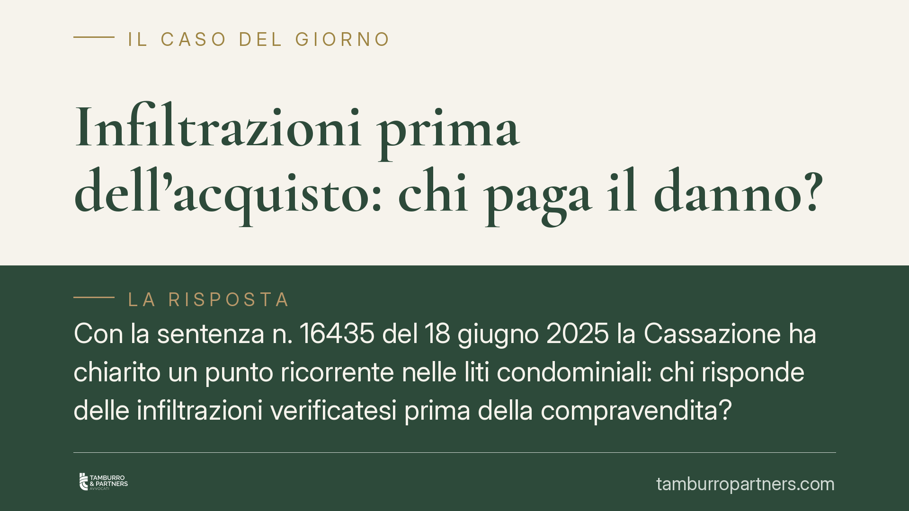

Infiltrazioni prima dell'acquisto: chi paga il danno?
Con la sentenza n. 16435 del 18 giugno 2025 la Cassazione ha chiarito un punto ricorrente nelle liti condominiali: chi risponde delle infiltrazioni verificatesi prima della compravendita? La risposta separa nettamente la posizione del venditore da quella dell'acquirente subentrato, con conseguenze rilevanti per chi acquista un immobile con un contenzioso pregresso.

Il caso
La vicenda è tra le più frequenti nella pratica condominiale. Un immobile provoca infiltrazioni a danno di un altro appartamento o delle parti comuni. Il danno si produce mentre l'unità è ancora di proprietà del venditore. Successivamente l'immobile viene venduto. Al momento della richiesta di risarcimento, il danneggiato individua come controparte l'acquirente, ritenendolo tenuto a rispondere in quanto nuovo proprietario del bene da cui proviene il danno.
La Cassazione, con la sentenza n. 16435/2025, ha respinto questa impostazione, ribadendo la natura dell'obbligazione risarcitoria e i suoi limiti soggettivi.
Inquadramento normativo
Il riferimento è l'art. 2051 del codice civile, che disciplina la responsabilità per danno da cose in custodia: "Ciascuno è responsabile del danno cagionato dalle cose che ha in custodia, salvo che provi il caso fortuito". Si tratta di una responsabilità extracontrattuale, cioè che nasce da un fatto illecito e non da un contratto tra le parti.
Il punto decisivo è che questa obbligazione non è propter rem. L'espressione indica gli obblighi che seguono la cosa e si trasferiscono automaticamente a chi ne diventa proprietario (per esempio, l'obbligo di pagare gli oneri condominiali). Il debito risarcitorio da infiltrazioni non appartiene a questa categoria: sorge in capo a chi era custode del bene nel momento in cui il danno si è prodotto.
La custodia presuppone un potere di fatto e di controllo sulla cosa. Chi non aveva ancora acquistato l'immobile quando le infiltrazioni si sono verificate non ne era custode e, dunque, non può essere chiamato a risponderne.
Implicazioni pratiche
La distinzione produce effetti concreti su tutti i soggetti coinvolti.
Per l'acquirente: non subentra automaticamente nei debiti risarcitori maturati prima del rogito. Se il danno si è consolidato quando l'immobile era ancora del venditore, la pretesa del danneggiato va indirizzata a quest'ultimo. L'acquirente risponde solo dei danni prodottisi dopo che ha assunto la custodia del bene.
Per il venditore: la vendita dell'immobile non lo libera dalle conseguenze del danno causato durante il periodo in cui era proprietario e custode. La cessione trasferisce la proprietà, non la responsabilità già maturata.
Per il danneggiato (condòmino o condominio): occorre individuare correttamente la controparte, ricostruendo la data in cui il danno si è verificato e chi, in quel momento, aveva la custodia. Un'azione rivolta al soggetto sbagliato rischia il rigetto.
Resta ferma la possibilità che il danno abbia natura continuativa o progressiva: se le infiltrazioni proseguono nel tempo, la responsabilità può ripartirsi tra più custodi succedutisi nella proprietà, ciascuno per il periodo di rispettiva competenza. È un profilo che va valutato caso per caso, sulla base della perizia tecnica.
Cosa fare in concreto
- Datate il danno. Prima di agire o difendervi, ricostruite con precisione quando le infiltrazioni si sono verificate: documentazione fotografica, verbali assembleari, segnalazioni scritte e perizie sono decisivi per individuare il custode responsabile.
- Prima di acquistare, verificate il contenzioso. Consigliamo di richiedere all'amministratore la situazione di eventuali liti pendenti e di danni segnalati sull'immobile, così da conoscere il quadro prima del rogito.
- Regolate la questione nel contratto. Inserite nel preliminare o nel rogito clausole che disciplinino espressamente danni e vizi pregressi, con eventuali garanzie o manleve a carico del venditore.
- Indirizzate la richiesta al soggetto corretto. Se siete i danneggiati, verificate chi era custode al momento del danno prima di notificare la pretesa: un'azione mal indirizzata comporta costi e tempi inutili.
- Valutate la natura del danno. In presenza di infiltrazioni protratte nel tempo, fate accertare tecnicamente il periodo di produzione del danno per ripartire correttamente le responsabilità tra i diversi proprietari.
La sentenza conferma un principio di equilibrio: la responsabilità resta legata al controllo effettivo del bene nel momento del danno, non alla titolarità formale al momento della richiesta.
---
*Contributo informativo a cura di Tamburro & Partners - Avv. Giuseppe Tamburro. Non costituisce parere legale.*
Ogni condominio ha una storia a sé.
Se gestisci un'amministrazione e vuoi un confronto su una specifica questione condominiale, scrivi allo studio. Ti rispondiamo entro un giorno lavorativo.